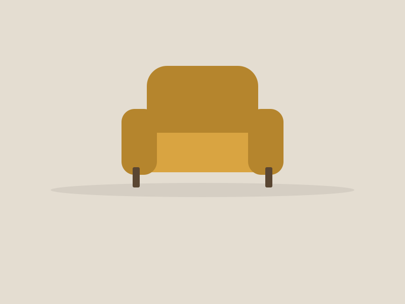

Chair
Alva Lounge Chair
€690.00
Item no. NH-2001
A low lounge chair with a wide seat and a bright mustard cover. Pairs well with a small side table and a good book.
Dimensions
- Width: 78 cm
- Depth: 82 cm
- Height: 74 cm
- Seat height: 40 cm
Material & Construction
- Frame: solid beech
- Cushions: cold foam
- Upholstery: wool blend, mustard
- Legs: walnut-stained beech
Features & Feel
- Relaxed, reclined seating position
- Warm, slightly rough wool texture